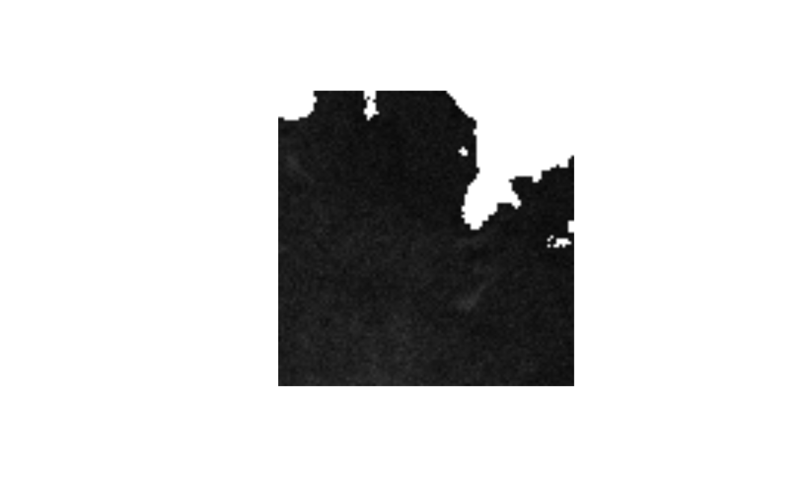
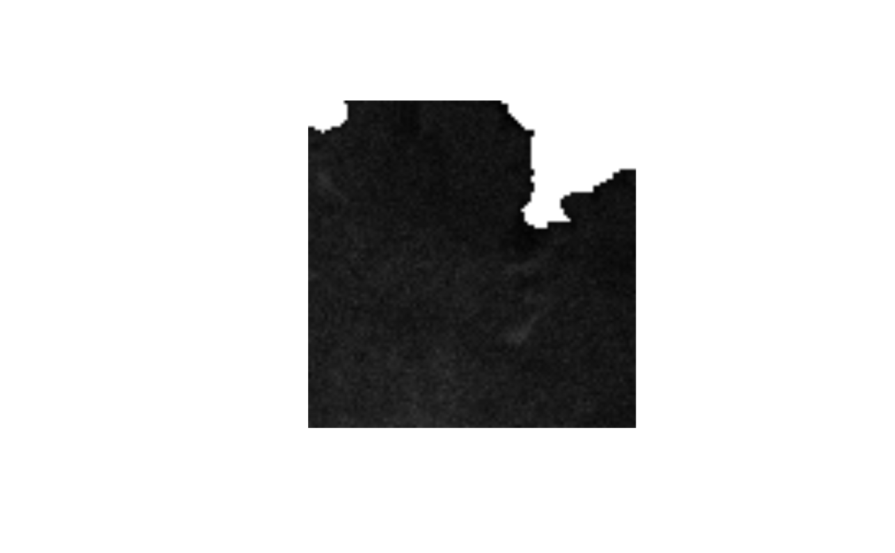

Threshold every image frame in an image stack based on their mean.
mean_stack_thresh.RdAn ijtiff_img is a 4-dimensional array indexed by
img[y, x, channel, frame]. For each channel (which consists of a stack of
frames), this function finds a threshold based on the sum all of the frames,
uses this to create a mask and then applies this mask to every frame in the
stack (so for a given pillar in the image stack, either all the pixels
therein are thresholded away or all are untouched, where pillar x,y of
channel ch is img[y, x, ch, ]).
mean_stack_thresh(img, method, fail = NA, ignore_black = FALSE, ignore_white = FALSE, ignore_na = FALSE)
Arguments
| img | A 4-dimensional array in the style of an
ijtiff_img (indexed by |
|---|---|
| method | The name of the thresholding method you wish to use. The
available methods are |
| fail | When using |
| ignore_black | Ignore black pixels/elements (zeros) when performing the thresholding? |
| ignore_white | Ignore white pixels when performing the thresholding? If
set to |
| ignore_na | This should be |
Value
An object of class stack_threshed_img which is the thresholded
image (an array in the style of an ijtiff_img).
Pillars not exceeding the threshold are set to the fail value (default
NA).
Details
It's called mean_stack_thresh() and not sum_stack_thresh() because its
easier for people to visualize the mean of an image series than to visualize
the sum, but for the sake of this procedure, both are equivalent, except for
the fact that the thresholding routine invoked inside this function prefers
integers, which we get by using a sum but not by using a mean.
For
ignore_white = TRUE, if the maximum value in the array is one of2^8-1,2^16-1or2^32-1, then those max values are ignored. That's because they're the white values in 8, 16 and 32-bit images respectively (and these are the common image bit sizes to work with). This guesswork has to be done becauseRdoes not know how many bits the image was on disk. This guess is very unlikely to be wrong, and if it is, the consequences are negligible anyway. If you're very concerned, then just specify the white value as an integer in thisignore_whiteargument.If you have set
ignore_black = TRUEand/orignore_white = TRUEbut you are still getting error/warning messages telling you to try them, then your chosen method is not working for the given array, so you should try a different method.For a given array, if all values are less than
2^8, saturated value is2^8 - 1, otherwise, saturated value is2^16 - 1.
Examples
#> #>#>#> #> #> #> #>#> #> #> #> #>#> #> #> #> #>#> #> #> #> #>